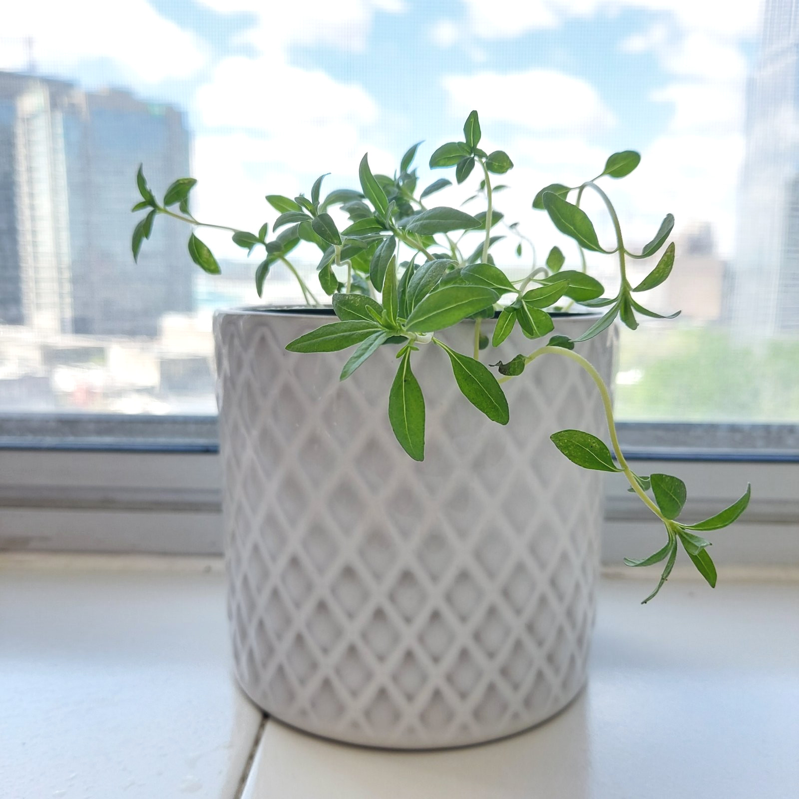
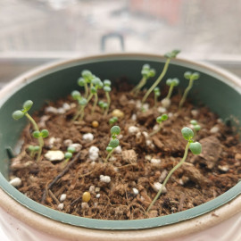
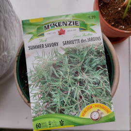

17 May

Seedlings - 22 Apr

Sowing summer savory 2 - 6 Apr
Planted April 2022
McKenzie seeds
Journal 2022
- April
- 6: Seeds (McKenzie) planted in new soil (MiracleGro indoor mix).
- 21: Emerges a few days ago. They are not about an inch long.
- May
- 20: Looking beautiful but with bald spot on the soil. Today top up seeds and covered with 3 mm of starter soil
- 23: Pinched out tops
Care
- Fertilizer: not needed. If wanted, small amount all purpose
- prune
- Water: regular watering especially when young. Keep soil moist, not wet. Once established, drier is fine. Saily watering is recommended when hot.